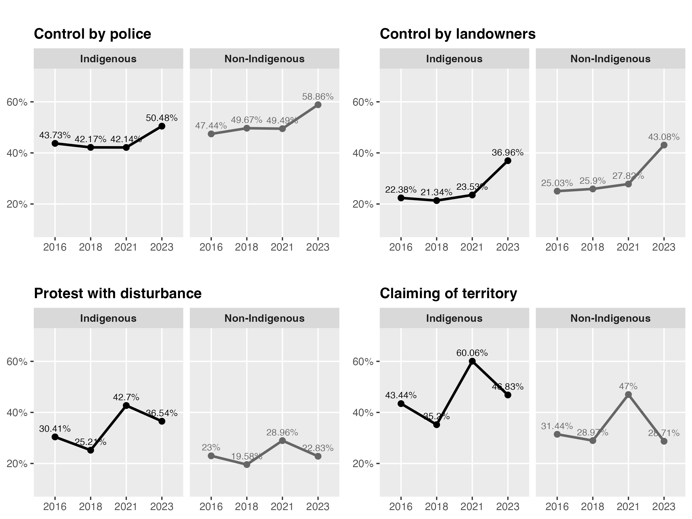
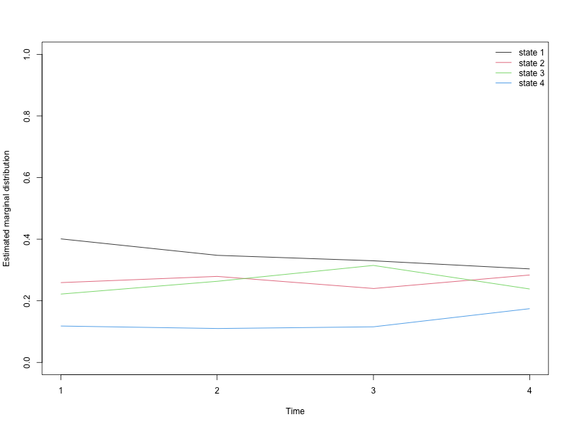
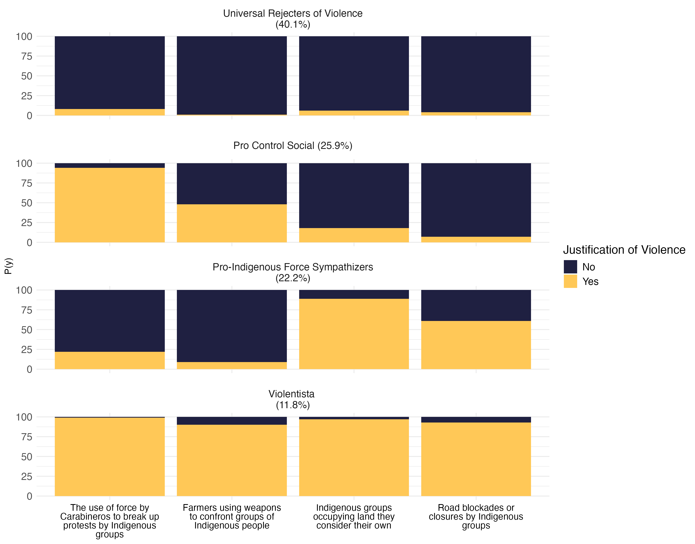
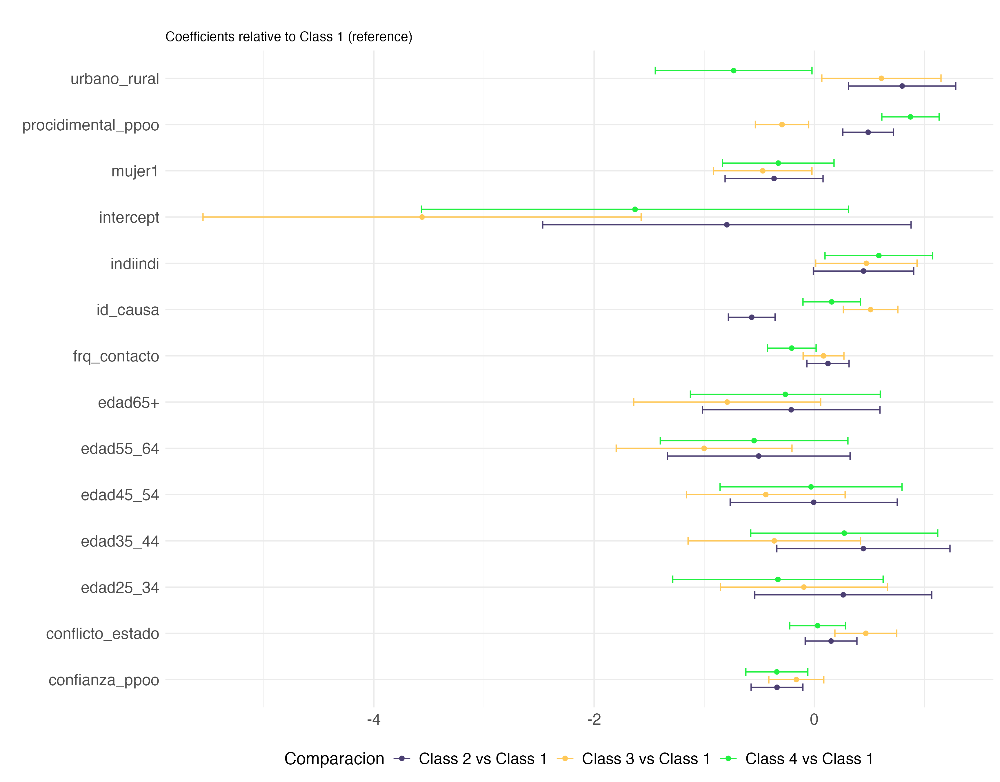
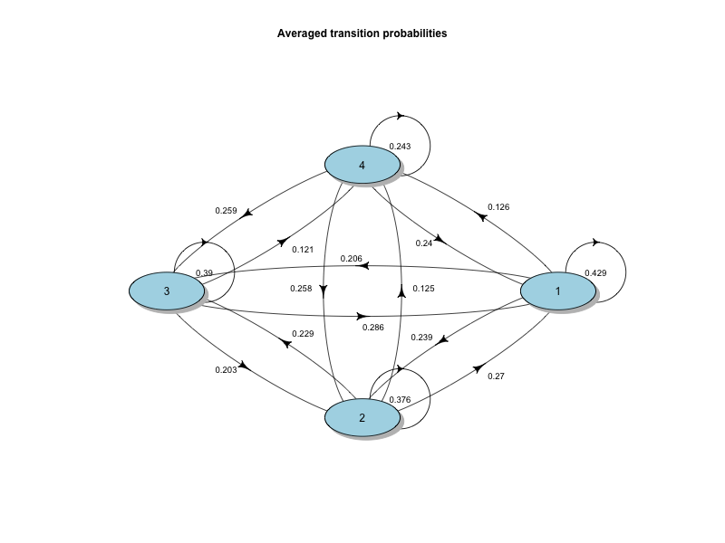
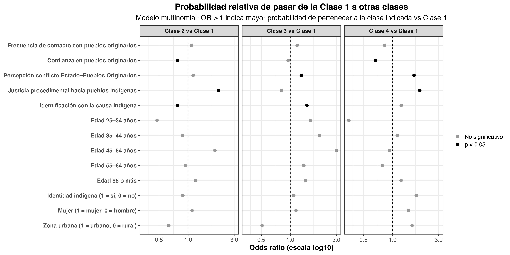

¿Qué justifica la violencia interétnica? Dinámicas entre indígenas y no indígenas en Chile desde un enfoque longitudinal (2016 - 2023)
1 Abstract
(Escribir más adelante.)
Keywords: conflicto interétnico, violencia intergrupal, legitimidad, justicia procedimental, Chile, análisis de clases latentes.
2 1. Introducción
Responsable: Matías Deneken
(Plantear pregunta central, contribución, relevancia empírica y teórica.)
El estudio del conflicto entre el Estado chileno y los pueblos indígenas—especialmente el pueblo mapuche—ha estado marcado por tensiones históricas, desigualdades estructurales y episodios recurrentes de violencia intergrupal. Sin embargo, existe limitada evidencia longitudinal sobre cómo cambian las actitudes hacia la violencia interétnica y qué factores sociales y psicológicos legitiman su uso. Este artículo aborda estas brechas mediante un diseño de clases latentes aplicado a cuatro olas de la Encuesta Longitudinal de Relaciones Interculturales (ELRI, 2016–2023).
3 2. Perspectiva teórica
3.1 2.1. El conflicto indígena en Chile
(Repaso histórico y político hasta el proceso constituyente.)
3.2 2.2. Relaciones intergrupales: contacto, confianza y legitimidad
(Enfocar en teorías de relaciones intergrupales, contacto, amenaza, confianza social.)
3.3 2.3. Justicia procedimental y violencia intergrupal
(Relacionar legitimidad institucional con apoyo a la violencia entre grupos.)
4 3. Métodos
4.1 3.1. Datos
Utilizamos la Encuesta Longitudinal de Relaciones Interculturales (ELRI), un panel que sigue a personas indígenas y no indígenas entre 2016 y 2023.
4.2 3.2. Variables
4.2.1 3.2.1. Variable independiente principal
Clases latentes construidas a partir de cuatro indicadores:
- Dos ítems asociados a cambio social.
- Dos ítems asociados a control social.
4.2.2 3.2.2. Variables dependientes
Cada modelo incluye como desenlaces:
- Percepción de conflicto Estado–Pueblos Originarios
- Confianza en pueblos originarios
- Justicia procedimental hacia pueblos indígenas
- Identificación con la causa indígena
- Frecuencia de contacto
- Urbano/rural
- Mujer
- Identidad indígena (indi / no indi)
- Edad
(Se pueden agregar descriptivos en tabla.)
4.3 3.3. Técnica analítica
Se estimaron modelos de clases latentes (Latent Class Analysis, LCA) para identificar perfiles de legitimación de la violencia interétnica. Posteriormente, se modeló la probabilidad de pertenencia a cada clase como función de las variables dependientes mediante regresión logística multinomial o transición latente (dependiendo del diseño final).
4.3.1 3.X. Modelo estructural
4.3.1.1 3.X.1 Distribución inicial de las clases latentes
Sea (U_{it} {1,,K}) la clase latente del individuo (i) en el tiempo (t), y (_i) un vector de covariables individuales (por ejemplo, edad, género, identidad indígena, zona urbana/rural, confianza en pueblos originarios, percepción de conflicto, justicia procedimental e identificación con la causa indígena).
La distribución inicial de las clases, en (t = 1), se modela mediante una regresión logística multinomial:
\[ P(U_{i1} = u \mid \mathbf{X}_i) \;=\; \frac{\exp\big(\alpha_u + \mathbf{X}_i^\top \boldsymbol{\beta}_u\big)} {\displaystyle \sum_{v=1}^{K} \exp\big(\alpha_v + \mathbf{X}_i^\top \boldsymbol{\beta}_v\big)}, \quad u = 1,\dots,K, \]
donde (_u) es el intercepto específico de la clase (u) y (_u) es el vector de coeficientes asociado a las covariables (_i) para dicha clase. Una de las clases se toma como referencia para asegurar la identificación del modelo.
4.3.1.2 3.X.2 Modelo de transición entre clases
Para estudiar la dinámica de las clases entre dos olas consecutivas, modelamos la probabilidad de transición desde una clase de origen (v) en (t-1) hacia una clase de destino (u) en (t), en función de las mismas covariables (_i). La estructura de transición se especifica también mediante un modelo logístico multinomial:
\[ P\big(U_{it} = u \mid U_{i,t-1} = v,\; \mathbf{X}_i\big) \;=\; \frac{\exp\big(\gamma_{vu} + \mathbf{X}_i^\top \boldsymbol{\delta}_{vu}\big)} {\displaystyle \sum_{w=1}^{K} \exp\big(\gamma_{vw} + \mathbf{X}_i^\top \boldsymbol{\delta}_{vw}\big)}, \quad u = 1,\dots,K, \]
donde ({vu}) es el intercepto de la transición desde la clase (v) hacia la clase (u), y ({vu}) recoge el efecto de las covariables sobre dicha transición. En la práctica, estimamos razones de odds (odds ratios) para comparar la probabilidad de permanecer en la clase de referencia frente a la probabilidad de transitar a las otras clases, en función de las variables de contacto, confianza, percepción de conflicto, justicia procedimental, identificación con la causa indígena y características sociodemográficas.
5 4. Resultados
Descriptivos

Primer resultado: Clases y estabilidad de las mismas.


Resultado 2: Probabilidad de pertenencia de las clases
| Predictores de pertenencia entre clases latentes | ||||
|---|---|---|---|---|
| Coeficientes y odds ratios (OR) del modelo de regresión multinomial | ||||
| Variable | Comparación | Coeficiente (IC 95%) | OR (IC 95%) | significativoicativo |
| confianza_ppoo | Class 2 vs Class 1 | -0.339 [-0.574, -0.104] | 0.71 [0.56, 0.90] | Sí (p < .05) |
| confianza_ppoo | Class 3 vs Class 1 | -0.163 [-0.413, 0.086] | 0.85 [0.66, 1.09] | No |
| confianza_ppoo | Class 4 vs Class 1 | -0.341 [-0.622, -0.059] | 0.71 [0.54, 0.94] | Sí (p < .05) |
| conflicto_estado | Class 2 vs Class 1 | 0.152 [-0.083, 0.387] | 1.16 [0.92, 1.47] | No |
| conflicto_estado | Class 3 vs Class 1 | 0.468 [0.187, 0.748] | 1.60 [1.21, 2.11] | Sí (p < .05) |
| conflicto_estado | Class 4 vs Class 1 | 0.030 [-0.223, 0.283] | 1.03 [0.80, 1.33] | No |
| edad25_34 | Class 2 vs Class 1 | 0.263 [-0.541, 1.066] | 1.30 [0.58, 2.90] | No |
| edad25_34 | Class 3 vs Class 1 | -0.095 [-0.853, 0.663] | 0.91 [0.43, 1.94] | No |
| edad25_34 | Class 4 vs Class 1 | -0.330 [-1.286, 0.625] | 0.72 [0.28, 1.87] | No |
| edad35_44 | Class 2 vs Class 1 | 0.446 [-0.341, 1.232] | 1.56 [0.71, 3.43] | No |
| edad35_44 | Class 3 vs Class 1 | -0.364 [-1.147, 0.418] | 0.69 [0.32, 1.52] | No |
| edad35_44 | Class 4 vs Class 1 | 0.272 [-0.578, 1.121] | 1.31 [0.56, 3.07] | No |
| edad45_54 | Class 2 vs Class 1 | -0.006 [-0.764, 0.753] | 0.99 [0.47, 2.12] | No |
| edad45_54 | Class 3 vs Class 1 | -0.441 [-1.161, 0.280] | 0.64 [0.31, 1.32] | No |
| edad45_54 | Class 4 vs Class 1 | -0.030 [-0.856, 0.796] | 0.97 [0.42, 2.22] | No |
| edad55_64 | Class 2 vs Class 1 | -0.505 [-1.335, 0.325] | 0.60 [0.26, 1.38] | No |
| edad55_64 | Class 3 vs Class 1 | -1.001 [-1.799, -0.203] | 0.37 [0.17, 0.82] | Sí (p < .05) |
| edad55_64 | Class 4 vs Class 1 | -0.547 [-1.399, 0.305] | 0.58 [0.25, 1.36] | No |
| edad65+ | Class 2 vs Class 1 | -0.210 [-1.016, 0.596] | 0.81 [0.36, 1.81] | No |
| edad65+ | Class 3 vs Class 1 | -0.791 [-1.640, 0.057] | 0.45 [0.19, 1.06] | No |
| edad65+ | Class 4 vs Class 1 | -0.263 [-1.125, 0.599] | 0.77 [0.32, 1.82] | No |
| frq_contacto | Class 2 vs Class 1 | 0.124 [-0.068, 0.315] | 1.13 [0.93, 1.37] | No |
| frq_contacto | Class 3 vs Class 1 | 0.084 [-0.102, 0.269] | 1.09 [0.90, 1.31] | No |
| frq_contacto | Class 4 vs Class 1 | -0.205 [-0.427, 0.016] | 0.81 [0.65, 1.02] | No |
| id_causa | Class 2 vs Class 1 | -0.569 [-0.781, -0.357] | 0.57 [0.46, 0.70] | Sí (p < .05) |
| id_causa | Class 3 vs Class 1 | 0.511 [0.263, 0.759] | 1.67 [1.30, 2.14] | Sí (p < .05) |
| id_causa | Class 4 vs Class 1 | 0.158 [-0.103, 0.418] | 1.17 [0.90, 1.52] | No |
| indiindi | Class 2 vs Class 1 | 0.447 [-0.009, 0.903] | 1.56 [0.99, 2.47] | No |
| indiindi | Class 3 vs Class 1 | 0.473 [0.013, 0.933] | 1.60 [1.01, 2.54] | Sí (p < .05) |
| indiindi | Class 4 vs Class 1 | 0.586 [0.097, 1.075] | 1.80 [1.10, 2.93] | Sí (p < .05) |
| intercept | Class 2 vs Class 1 | -0.794 [-2.467, 0.878] | 0.45 [0.08, 2.41] | No |
| intercept | Class 3 vs Class 1 | -3.563 [-5.552, -1.573] | 0.03 [0.00, 0.21] | Sí (p < .05) |
| intercept | Class 4 vs Class 1 | -1.628 [-3.568, 0.312] | 0.20 [0.03, 1.37] | No |
| mujer1 | Class 2 vs Class 1 | -0.366 [-0.811, 0.079] | 0.69 [0.44, 1.08] | No |
| mujer1 | Class 3 vs Class 1 | -0.469 [-0.916, -0.022] | 0.63 [0.40, 0.98] | Sí (p < .05) |
| mujer1 | Class 4 vs Class 1 | -0.327 [-0.834, 0.179] | 0.72 [0.43, 1.20] | No |
| procidimental_ppoo | Class 2 vs Class 1 | 0.489 [0.258, 0.719] | 1.63 [1.29, 2.05] | Sí (p < .05) |
| procidimental_ppoo | Class 3 vs Class 1 | -0.293 [-0.535, -0.051] | 0.75 [0.59, 0.95] | Sí (p < .05) |
| procidimental_ppoo | Class 4 vs Class 1 | 0.873 [0.613, 1.133] | 2.39 [1.85, 3.11] | Sí (p < .05) |
| urbano_rural | Class 2 vs Class 1 | 0.798 [0.311, 1.284] | 2.22 [1.37, 3.61] | Sí (p < .05) |
| urbano_rural | Class 3 vs Class 1 | 0.609 [0.068, 1.151] | 1.84 [1.07, 3.16] | Sí (p < .05) |
| urbano_rural | Class 4 vs Class 1 | -0.733 [-1.444, -0.021] | 0.48 [0.24, 0.98] | Sí (p < .05) |

Resultado 3: Probabilidad de cambiarse de clase

| Odds ratio de transición desde la Clase 1 | ||||||
|---|---|---|---|---|---|---|
| Probabilidad relativa de pasar a las Clases 2, 3 y 4 (ref. = Clase 1) | ||||||
| Variable |
Transición a Clase 2
|
Transición a Clase 3
|
Transición a Clase 4
|
|||
| OR Clase 2 vs 1 | p | OR Clase 3 vs 1 | p | OR Clase 4 vs 1 | p | |
| Frecuencia de contacto con pueblos originarios | 1.09 | 0.423 | 1.18 | 0.122 | 0.83 | 0.100 |
| Confianza en pueblos originarios | 0.78 | 0.028 | 0.95 | 0.690 | 0.67 | 0.002 |
| Percepción conflicto Estado–Pueblos Originarios | 1.13 | 0.260 | 1.30 | 0.047 | 1.67 | 0.001 |
| Justicia procedimental hacia pueblos indígenas | 2.06 | 0.000 | 0.81 | 0.065 | 1.91 | 0.000 |
| Identificación con la causa indígena | 0.78 | 0.016 | 1.49 | 0.002 | 1.23 | 0.119 |
| Edad 25–34 años | 0.48 | 0.215 | 1.61 | 0.491 | 0.35 | 0.166 |
| Edad 35–44 años | 0.88 | 0.823 | 2.01 | 0.324 | 1.12 | 0.877 |
| Edad 45–54 años | 1.90 | 0.259 | 3.00 | 0.115 | 0.93 | 0.921 |
| Edad 55–64 años | 0.94 | 0.908 | 1.38 | 0.646 | 0.78 | 0.731 |
| Edad 65 o más | 1.20 | 0.744 | 1.43 | 0.605 | 1.23 | 0.770 |
| Identidad indígena (1 = sí, 0 = no) | 0.88 | 0.592 | 1.08 | 0.739 | 1.76 | 0.056 |
| intercept | 0.31 | 0.217 | 0.05 | 0.007 | 0.01 | 0.000 |
| Mujer (1 = mujer, 0 = hombre) | 1.10 | 0.686 | 1.14 | 0.580 | 1.46 | 0.170 |
| Zona urbana (1 = urbano, 0 = rural) | 0.63 | 0.113 | 0.51 | 0.052 | 1.59 | 0.107 |

6 5. Discusión
(Por completar: implicancias teóricas, políticas, contribuciones al estudio del conflicto indígena.)
7 6. Conclusión
(Por completar.)
8 Referencias
(Agregar luego con pandoc csl.)